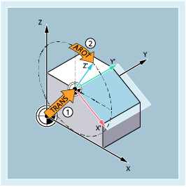

The frame is a self-contained arithmetic rule that transforms one Cartesian coordinate system into another Cartesian coordinate system.
The basic frame describes coordinate transformation from the basic coordinate system (BCS) to the basic zero system (BZS) and has the same effect as settable frames.
More information:
→ Chapter ""
Settable frames are the configurable work offsets which can be called from within any NC program with the G54 to G57 and G505 to G599 commands. The offset values are predefined by the operator, and stored in the zero offset memory of the control system. They are used to define the settable zero system (SZS).
More information:
→ Chapter ""
→ Chapter ""
Sometimes it is useful or necessary within an NC program, to move the originally selected workpiece coordinate system (or the "settable zero system") to another position and, if required, to rotate it, mirror it and/or scale it. This is realized using programmable frames.
Example:
① | Programmable frame 1: Offset of the zero point of the tool coordinate system (WCS). |
② | Programmable frame 2: WCS rotation to align a plane parallel to the required machining plane |
Beyond this, it is possible to align the workpiece coordinate system using a frame rotation to adapt to the alignment of the tool or workpiece.
More information:
→ Chapter "Frame rotation to align at the tool or workpiece (TOFRAME, TOROT, PAROT)"
For certain program execution operations, for example, approaching a tool change point, individual frame components must be temporarily suppressed.
More information:
→ Chapter "Deselect frame (G53, G153, SUPA, G500)"